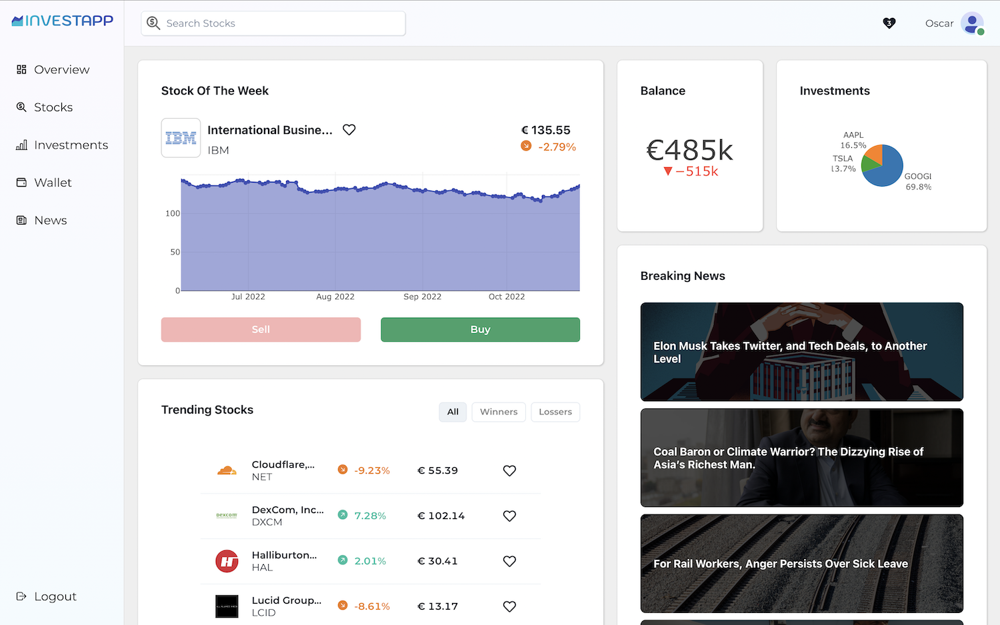
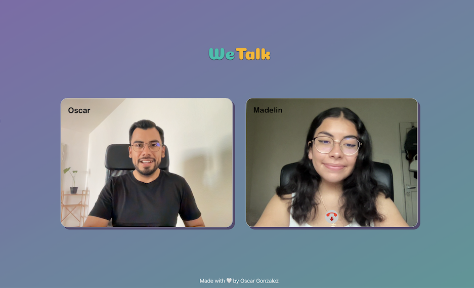
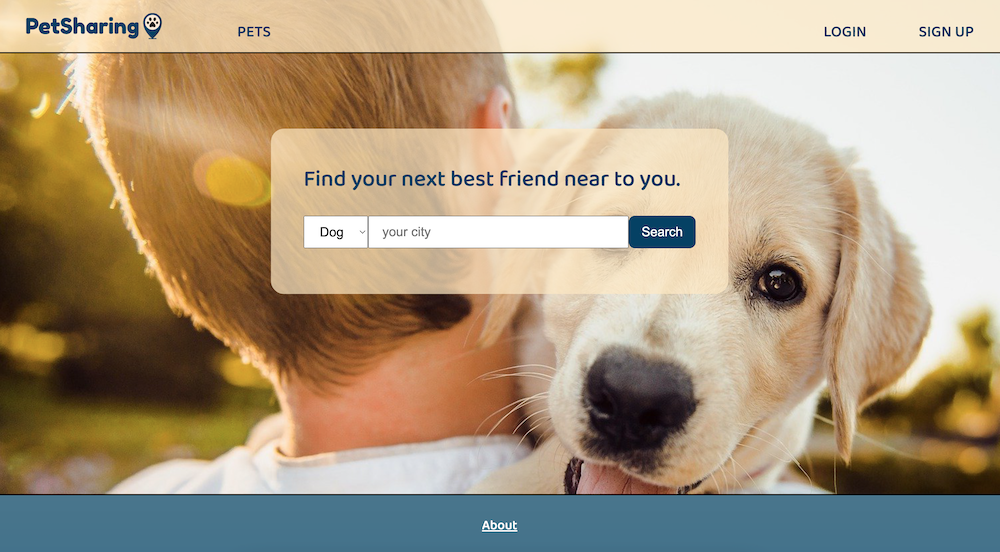
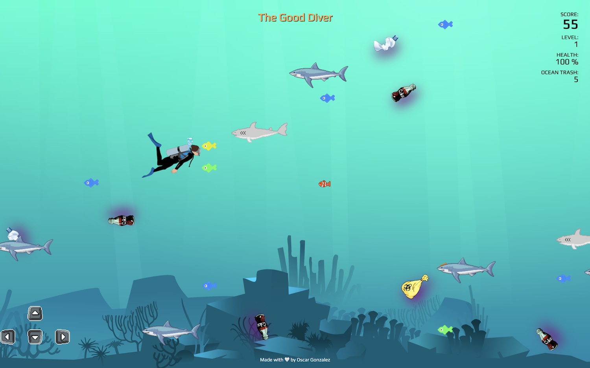

Latest Projects
-

Investapp simulates stock trading and portfolio management.
-

WeTalk allows video calls via web browsers.
-

PetSharing helps find pets and pet lovers close to you.
-

The Good Diver is a game about diving and cleaning the acean.
“If debugging is the process of removing software bugs, then programming must be the process of putting them in.”
— Edsger W. Dijkstra
How can I help you?
I love to use web tecnologies to convert ideas in real applications.